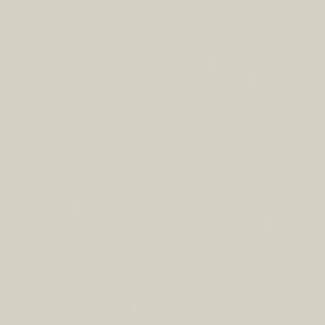

Base color
sRGB · RGB8
4096 × 4096 · 0.13 MiB
SHA-256
f04c8e2b79ea0383ed719ea02322d332e9925f2ac03625846adfa873d5d05012Rebuilt suite / 07
Clear glaze over warm ivory ceramic; fine firing flow and shallow glaze peel, without random chips.
The specimen and matched surface proof are different presentations. Native texture resolution does not determine render resolution.

Specimen: Blender 4.5.3 LTS · CPU · 768 maximum / 128 minimum samples · adaptive threshold 0.005 · denoising: false · AgX.
Specimen manifest · Matched-proof manifest · Editable specimen scenes · Renderer source · Review and remaining limits
Specimen SHA-256 9dc0460e54a0e7b33aaf233eb7446eb43ba244c7d8f22211b8942e4f918fd8cc
Proof SHA-256 c64d896054ee4cec1b2ee426b7976507103819cc559d512e2fc9cbae20072978
Base color uses sRGB; data maps use linear / Non-Color. Displacement in meters = (height − 0.5) × 0.00045. Pair macro height with residual normal for geometric displacement, or use the full normal without macro displacement.
Previews below are reduced display copies. Each link opens the unchanged native 4096 × 4096 map.

sRGB · RGB8
4096 × 4096 · 0.13 MiB
f04c8e2b79ea0383ed719ea02322d332e9925f2ac03625846adfa873d5d05012Linear · Gray8
4096 × 4096 · 1.52 MiB
02100ff6676facaba0747453d4a1b241f6acff0a2cee53145f82bbacdbb4babb
Linear · Gray8
4096 × 4096 · 0.02 MiB
334c4a79f661f8f9c215b7fd06284d5fb3fe7fd3822f10dc8842f85f664c9a7f
Tangent space · RGB8
4096 × 4096 · 1.81 MiB
080e1c46fd9913c2e81a98ec3373247571b34b548e45f31fc5fe0dbf8d2fcffc
Tangent space · RGB8
4096 × 4096 · 1.81 MiB
e9d5b26ecf43b0224220e766b990b60eff9c39e2eaf9fffabd897bca5edfd2b4Linear · Gray16
4096 × 4096 · 9.51 MiB
b7efeeadc92b7a0110746a7b573c5e3ab0271cb2d2bafea964d254cb318475b7Linear · Gray16
4096 × 4096 · 8.24 MiB
5c951f8697d0794ac611019477b414b490a017e123402362c09637170fb4feb6
Tangent space · RGB8
4096 × 4096 · 2.09 MiB
34ee0092c4bdd4305b6fc7dfaff6b24b70a5688a784fe2bd43d3edb5dff47510
Linear · Gray8
4096 × 4096 · 0.02 MiB
eb472d6bf383e4da4fb64a8cedee8fb37709545cad9a1058396c5b77ba2c577eLinear · R: AO / G: roughness / B: metallic
4096 × 4096 · 1.92 MiB
f66defcc311d87c9014233156191f7a929d5c8d03ea0a93b1be3dee96f080563
Linear · Gray8
4096 × 4096 · 0.02 MiB
334c4a79f661f8f9c215b7fd06284d5fb3fe7fd3822f10dc8842f85f664c9a7f
Linear · Gray8
4096 × 4096 · 0.02 MiB
eb472d6bf383e4da4fb64a8cedee8fb37709545cad9a1058396c5b77ba2c577eProcedural anatomy and finish models use artistic physical estimates. These are not measured scans or calibrated reflectance data.
Physical material metadata · Original appearance comparison · Preserved baseline evidence